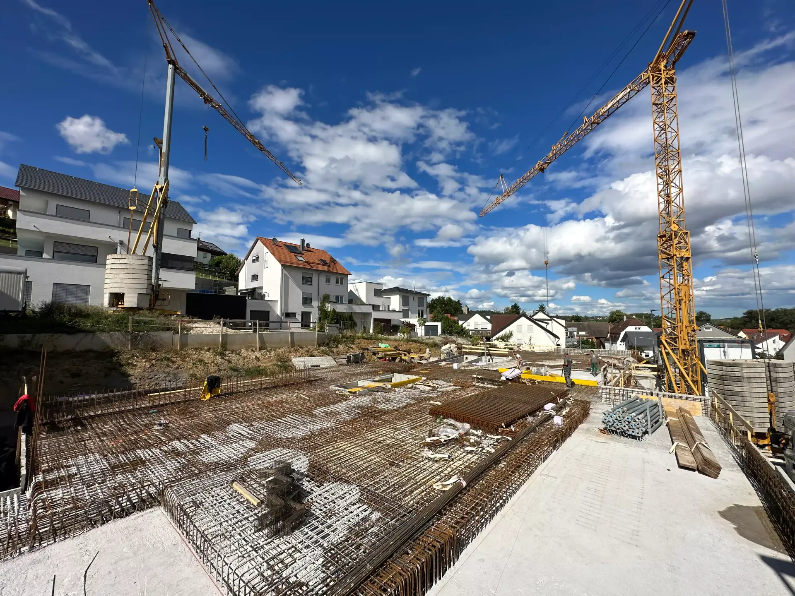
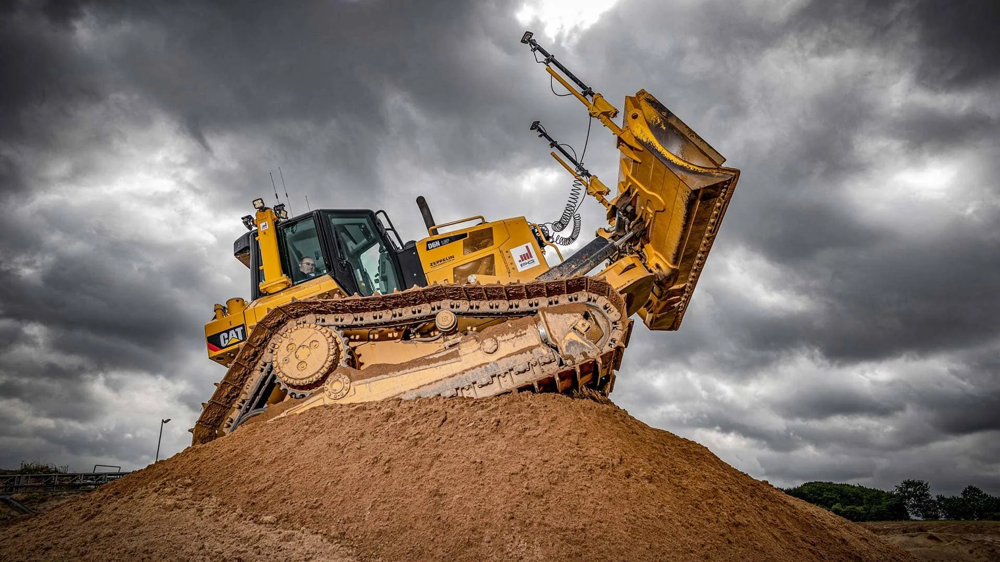

Bauunternehmen Stuttgart
Stark bauen in Stuttgart und Umgebung.
HK Bau begleitet Bauprojekte vom Rohbau bis zur koordinierten Ausführung. Mit festen Ansprechpartnern, klarer Organisation und Erfahrung aus realen Projekten in der Region.
Bauunternehmen Stuttgart
Bauunternehmen für Projekte, die sauber organisiert sein müssen.
Wer ein Bauunternehmen in Stuttgart sucht, braucht mehr als eine Liste von Leistungen. Entscheidend ist, ob Planung, Ausführung und Kommunikation zusammenpassen. Genau hier setzt HK Bau an: Wir verbinden handwerkliche Bauleistung mit klarer Abstimmung, belastbarer Baustellenorganisation und kurzen Wegen zu den Verantwortlichen.
Unsere Arbeit deckt zentrale Bereiche wie Rohbau, Hochbau, Stahlbetonbau, Mauerwerksbau, Tiefbau, Kanalbau und schlüsselfertige Leistungen ab. Damit eignet sich HK Bau für private, gewerbliche und öffentliche Projekte in Stuttgart, Fellbach, Waiblingen, Esslingen, Ludwigsburg, Böblingen, Sindelfingen und der weiteren Region.
Leistungen
Ein Ansprechpartner für die entscheidenden Bauphasen.
Direkte Einstiege zu den wichtigsten Leistungsbereichen und passenden Referenzen.
01
Rohbau & Stahlbetonbau
Tragende Strukturen, Schalung, Bewehrung und Betonage für robuste Baukörper.

02Tiefbau & Erdbau
Vorbereitung, Erdarbeiten und Infrastruktur rund um tragfähige Baugrundlagen.
03Schlüsselfertigbau
Koordinierte Abläufe, klare Schnittstellen und verlässliche Umsetzung bis zur Übergabe.
Region Stuttgart
Nicht nur Stuttgart. Der relevante Radius zählt.
HK Bau arbeitet in Stuttgart und im erweiterten Umkreis. Wichtig sind dabei kurze Abstimmung, passende Kapazitäten und ein klarer Leistungsumfang.
Stuttgart
Fellbach
Waiblingen
Esslingen
Ludwigsburg
Böblingen
Sindelfingen
Leonberg
Remseck
Ditzingen
FAQ
Häufige Fragen vor Projektstart.
Bietet HK Bau alle Bauleistungen aus einer Hand?
Ja. HK Bau übernimmt das komplette Bauspektrum – Rohbau, Hochbau, Tiefbau, Stahlbetonbau, Mauerwerksbau und schlüsselfertiges Bauen. Besonders im Hochbau und Rohbau begleiten wir Projekte von der Gründung bis zum fertigen Bauwerk – alles aus einer Hand.
Welche Bauleistungen übernimmt HK Bau in Stuttgart?
HK Bau übernimmt unter anderem Rohbau, Hochbau, Tiefbau, Kanalbau, Mauerwerksbau, Stahlbetonbau und schlüsselfertige Leistungen.
Arbeitet HK Bau nur in Stuttgart?
Nein. Neben Stuttgart arbeitet HK Bau in der gesamten Region und je nach Projekt auch im erweiterten Radius von mindestens 75 km, unter anderem in Fellbach, Waiblingen, Esslingen, Ludwigsburg, Böblingen, Sindelfingen, Leonberg, Schorndorf, Backnang, Kirchheim unter Teck, Nürtingen und bis Richtung Pforzheim.
Kann ich ein konkretes Projekt direkt anfragen?
Ja. Über die Kontaktseite kann ein Projekt direkt angefragt werden. Je klarer Leistungsumfang, Standort und Zeitrahmen beschrieben sind, desto schneller ist eine erste Einschätzung möglich.
Weitere Einsatzgebiete
Bauunternehmen auch in der Nähe von Stuttgart.
HK Bau ist auch in diesen Städten und Gemeinden für Bauprojekte verfügbar.
Projekt geplant?
Anfrage senden
Direkt mit HK Bau sprechen.
Beschreiben Sie kurz Ihr Bauvorhaben in Stuttgart oder Umgebung. Wir melden uns mit einer klaren ersten Einschätzung.